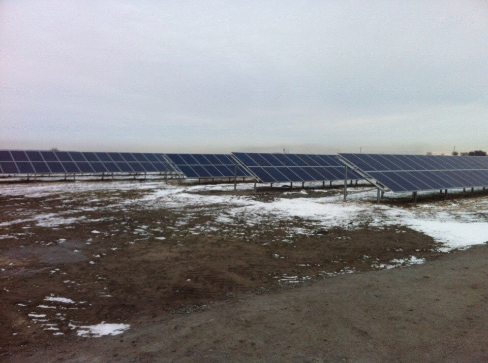

C нашими солнечными батаремяи уже выработано энегргии:
5 7 8 6 2 7 кВт
а это — 2 057 174 грн чистой экономии
Преимущества работы с солнечными батареями очевидны
-
1
Экономно
Цены на энергоносители (газ, нефть, уголь) с каждым днем растут, требуя от Вас колоссальных средств на содержание дома , квартиры (отопление, освещение ) и процветание. Просто попробуйте посчитать кол-во затраченных $ в год, или за 5 лет.. – давайте для примера возьмем частный дом площадью 100 м . На его освещение и работу электроприборов нужно немало, правда? Стабильность подаваемого напряжения тоже оставляет желать лучшего – от постоянных скачков напряжения электроприборы работают нестабильно и выходят из строя.
-
2
Доступно
бытует мнение о «заоблочной» стоимости автономной электростанции будь то 1кВт или 10000 МВт – однако это мнение ошибочно и больше похоже на миф. Заоблачными являются цены и счета которые ежемесячно приходят на оплату от гос.сети.
-
3
Экологично
альтернативные источники энергии (ветер, солнце, вода) по природе своей являются экологичными! В наш век технологий – вопрос экологии – самый серьезный! Мы обязаны беречь свое здоровье и экологию окружающей среды – на нашей планете жить нашим детям! Солнечная энергетика – экологическая энергия! Экологическая энергия – Ваше прекрасное самочувствие, Ваша безопасность. Никаких гудящих высоковольтных проводов над головой, никаких привязок в высоковольтным столбам.
-
 4
4
Высокий КПД
Высококвалифицированные инженеры произведут расчет с наивысшим КПД (min 93 %, max 98,3 %) непосредственно под Ваши географические координаты, непосредственно под Ваш наклон крыши (юг, юго-восток, юго-запад, если Вы собираетесь располагать солнечные панели на крыше), непосредственно по Ваш земельный участок (если автономную СЭС Вы собираетесь устанавливать на земле).
-
 5
5
Быстрая окупаемость
Автономная СЭС на примере частного дома 50-120 м.кв (учитывая особенности потребления энергии частного жилого дома) окупается в течении 4-8 лет. А ведь дом мы строим, чтобы жить в нем гораздо больше чем 4-8 лет! И за электричество от гос.сети мы платим на протяжении всей своей жизни – передавая эту казалось бы «необратимую традицию» своим будущим поколениям – давайте оборвем эту нелепую статистику и освободим себя и своих детей от этого замкнутого цикла.
-
6
Надежность
Только сертифицированное оборудование, отвечающее мировым стандартам ISO, ГОСТ, срок работы солнечных панелей составляет в среднем 25 лет, при этом по истечении этого срока КПД снижается на 10-30% не более. Это факт! (большинство спутников на орбите оснащены фотомодулями, фотоэлементами, солнечными панелями, а ведь спутник не на 1 день делают, правда?).
-
7
Автономность
Нам не страшен ни мороз, ни жара, ни перепады температур, ни цены на энергоносители (от которых зависят суммы в квитанциях на оплату услуг госэлетросети), ни обьявления такого рода : «Уважаемые жильцы (жители района), с такого-то по такое-то число в связи с ремонтными (профилактическими) работами, либо погодными условиями (и т.п.) у Вас будет отключено электричество» - разве они учли что в доме находится грудной ребенок? Или на улице -40 ? Или из-за перебоев может «полететь» дорогой холодильник с продуктами ? Или по телевизору вечером чемпионат мира по футболу!! Мы учли все вышеперечисленные и прочие факторы при расчете и разработке АБСОЛЮТНОЙ автономии.
-
8
Не требует обслуживания
Один раз установил – всю жизнь пользуюсь. Тех отдел учитывая максимальную нагрузку погодных, природных, человеческих факторов разрабатывает проект индивидуально под Ваше тех.задание. Вам не придется убирать снег или пыль с панелей, переживать из-за града, тумана, высокой облачности, пасмурной погоды и т.п. (и пусть скептики говорят что это нереально – держитесь от них подальше, 15 лет назад мобильный телефон был роскошью, 50 лет назад человек и подумать не мог о прогулке по лунной поверхности, кого-то это удивляет сегодня?).
Оставьте заявку на обратный звонок:
Дополнительные удобства
и сервис для наших клиентов
Есть свободное место накрыше Узнать как можно зарабратывать с солнечными батареями
Интересные факты о
солнечных панелях
-
55 светодиодных лампочек може гореь на протяжении 5 лет с одной зарядки одной аккумуляторной батареей
-
Солнечные батареи могут быть применены в любых сферах деятельности человека, глвавное - это Ваша фантазия
-

Ночью такая система солнечных панелей работает от аккумулятоных батарей, тоесть без солнца
-
Заказанные солнечные панели в Днепропеттровске Вам быстро просчитают, легко доставят по всей Украине, установят и настроят, Так что Вам останется только наслаждаться солнечной энегией
Отзывы людей уже воспользовавшихся преимуществами солнечной энергии:
-
Хорошие солнечные панели всегда приятно помогают бизнесу, а в Сакуре батареи очень хорошие высокий КПД и коефициент отдачи хорошо помогли моему подсобному хозяйству
Иванов Сергей, фермер с 20 летним стажем, инноватор, креативчик и еще какой то текст в описание
-
Хорошие солнечные панели всегда приятно помогают бизнесу, а в Сакуре батареи очень хорошие высокий КПД и коефициент отдачи хорошо помогли моему подсобному хозяйству
Иванов Сергей, фермер с 20 летним стажем, инноватор, креативчик и еще какой то текст в описание
-
Хорошие солнечные панели всегда приятно помогают бизнесу, а в Сакуре батареи очень хорошие высокий КПД и коефициент отдачи хорошо помогли моему подсобному хозяйству
Иванов Сергей, фермер с 20 летним стажем, инноватор, креативчик и еще какой то текст в описание
-
Хорошие солнечные панели всегда приятно помогают бизнесу, а в Сакуре батареи очень хорошие высокий КПД и коефициент отдачи хорошо помогли моему подсобному хозяйству
Иванов Сергей, фермер с 20 летним стажем, инноватор, креативчик и еще какой то текст в описание
-
Хорошие солнечные панели всегда приятно помогают бизнесу, а в Сакуре батареи очень хорошие высокий КПД и коефициент отдачи хорошо помогли моему подсобному хозяйству
Иванов Сергей, фермер с 20 летним стажем, инноватор, креативчик и еще какой то текст в описание
-
Хорошие солнечные панели всегда приятно помогают бизнесу, а в Сакуре батареи очень хорошие высокий КПД и коефициент отдачи хорошо помогли моему подсобному хозяйству
Иванов Сергей, фермер с 20 летним стажем, инноватор, креативчик и еще какой то текст в описание
-
Хорошие солнечные панели всегда приятно помогают бизнесу, а в Сакуре батареи очень хорошие высокий КПД и коефициент отдачи хорошо помогли моему подсобному хозяйству
Иванов Сергей, фермер с 20 летним стажем, инноватор, креативчик и еще какой то текст в описание
Оборудование для генерации
солнечной энергии:
-
Солнечная батарея
Солнечный модуль – зарядное устройство = солнечная батарея получает энергию в виде ультрафиолетовых лучей Солнышка и передает полученную энергию на контролер (зарядное устройство). Ультрафиолет смело и беспрепятственно проходит через тучки, туман, пасмурную погоду или слой снега, пыли. Не стоит путать прямой солнечный свет с солнечной активностью! Солнечным батареям (панелям) необходима всего лишь солнечная активность, образно говоря солнечная активность - это период времени от рассвета до заката!
Солнечный модуль
-
Зарядное устройство Зарядное устройство – аккумуляторы = а вот тут самое интересное, контролер (зарядное устройство) передает полученную от солнечных панелей энергию на аккумуляторы, заряжая их. В чем же интерес? А в том, что сохраненную в аккумуляторных батареях энергию мы будем использовать в то время, когда солнечная активность равна нулю, т.е. ночное время суток. Если в ночное время нам добытое и сохраненное электричество не требуется – то данный элемент просто выпадает из схемы (тем самым удешевляя стоимость автономной СЭС на 40%!), т.е. из нарисованной схемы выпадает изображение с аккумуляторами, и стрелочка движения энергии идет от контролера (зарядного устройства) напрямую в инвертор (он же преобразователь)
Зарядное устроство
-
Аккумуляторные батареи Аккумуляторы – инвертор = энергия которая уже находится в аккумуляторах передается в мозг нашей схемы – инвертор (он же преобразователь). Задача инвертора одна – полученную от аккумуляторов энергию (или как указано в предыдущем этапе сразу напрямую от контролера) конвертировать в стандартное напряжение 220V 50 гц.
Аккумуляторы
-
Инвертор Инвертор – потребители. Итак всего три этапа а,б,в – ничего сложного! И у нас уже имеется розетка 220v которой мы распоряжаемся каждый по своему усмотрению! Однако рассмотрим кто же может быть потребителем:
-частный дом, хоз.постройка, гараж, сарай (автономный – независимый ни от кого и ни от чего)!
-участок, поле, теплица (незаменимая надежная помощь агроному в освещении территории, поливе растений)
- промышленное помещение, магазин, склад (кондиционирование, холодильное оборудование, освещение, офисная техника)
Инвертор
-
Наслаждайтесь независимым электричеством
Зеленый тариф (государственные электросети) – Государство гарантирует, что весь объем произведенной электроэнергии из альтернативных источников покупается оптовым рынком электроэнергии (ОРЭ), на данный момент в лице гос предприятия 'Энергорынок ' по 'зеленому тарифу'. При этом, расчеты за электроэнергию осуществляются в денежной форме по алгоритму при котором производители, использующие альтернативные источники энергии, в ряде всех производителей получают денежные средства за проданную электроэнергию в первую очередь.
Потребители
Сферы применения
и примеры использования:
- Освещение, кондиционирование промышленных и производственных помещений
- Обеспечение электричеством полей теплиц, помощь в обеспечении автономным электричеством (частные, заповедные зоны – любые территории, любые масштабы)
- Зеленый тариф (оформление «под ключ») – продажа выработанного электричества государству по завышенному тарифу, (окупаемость в течении 7-10 лет, среднемесячная выручка 40 000 грн (1 Га – 5 МВт))
- Обеспечение автономной электроэнергией турбаз, гостиниц, отдаленных от гос.сети участков
- Использование автономной СЭС в качестве аварийной (для перестраховки) системы
- Использование автономной СЭС в качестве экономии средств!
- Возможность использовать электроэнергию на без аккумуляторной основе (т.е. в тех случаях когда в темное время суток нет нужды в электричестве - данная система удешевляет стоимость СЭС до 40%!!!)
- Диллерство, партнерство – возможность не только заработать с помощью высококачественного оборудования и квалифицированного персонала но и внести свой вклад в развитие экологии!
- Сезонные (весна, лето, осень), всесезонные СЭС.
- Ваш вариант использования автономного альтернативного источника электричества в тех или иных случаях для решения тех или иных задач
- Автономное электричество
- Экономия средств за счет использования альтернативных источников как в светлое время суток так и в ночное время
- Освещение территории
- Обеспечение поливом участков (запитка насоса от солнечных батарей)
- Аварийное электричество
- Ваш вариант использования автономного электричества в тех или иных случаях для решения тех или иных задач
- Авто/турристическая батарея (использование солнечных модулей для тех или иных туристических целей требующих вмешательства электроэнергии, например зарядить мобильное устройство, посмотреть телевизор, подключить ноутбук, и прочее)
- Декоративное освещение участков, зимних и летних садов
- Декоративные фонтаны запитанные от солнечных батарей
- Полив растений
- Ваш вариант использования автономной электроэнергии в тех или иных случаях для решения тех или иных задач
Галлерея выполненных работ:
-

Солнечная панель на крыше дома
-
Солнечная панель на крыше дома
-
Солнечная панель на крыше дома
-
Солнечная панель на крыше дома
-
Солнечная панель на крыше дома
-

Солнечная панель на крыше дома
-
Солнечная панель на крыше дома
-
Солнечная панель на крыше дома
-
Солнечная панель на крыше дома
-
Солнечная панель на крыше дома
-
Солнечная панель на крыше дома
{kind=link}
{kind=link}
{kind=link}
{kind=link}
{kind=link}
{kind=link}
{kind=link}
{kind=link}
{kind=link}
{kind=link}
Ответ прост – наши Клиенты - это Люди которые подумали над тем,
что такое ЭКОНОМИЯ! ДОСТУПНОСТЬ! ЭКОЛОГИЯ! НАДЕЖНОСТЬ! НЕЗАВИСИМОСТЬ!
Садовый центр «Сакура»
Сеть садовых центров «Сакура» - создана в 2004 г. и охватывает своим сервисом Днепропетровскую и Запорожскую область. Своей миссией мы считаем улучшение экологического состояния нашей отрасли за счет высадки большого количества декоративных растений, а также привитие нашим клиентам эстетического вкуса, связанного с созерцанием прекрасных растений.
пос. Братское,
ул. Запорожское шоссе, 1ж
телефоны:
0 (56) 785-02-38,
0 (95) 817 52 02,
0 (50) 320 06 51
e-mail:
forisdp@gmail.com